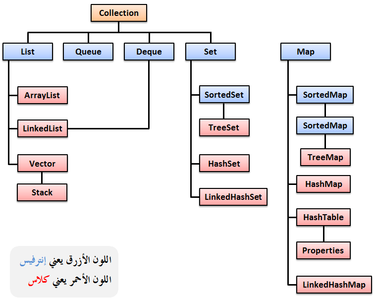

Javaالإطار Collection في جافا
مقدمة
في الإصدار 1 في جافا, تم بناء بعض الكلاسات التي تهتم بطريقة تخزين البيانات في الذاكرة أثناء تشغيل البرنامج و منها ما ذكرنا في الدرس السابق.
في الإصدار 2 في جافا, تم تطوير مبادئ الـ Data Structure بشكل ملحوظ حيث تم إضافة مجموعة كبيرة من الكلاسات (Classes) و الإنترفيسات (Interfaces) بشكل منظم ضمن مجموعات ( Collections ). كل مجموعة منهم تمثل مبدأ معين في طريقة تخزين البيانات في الذاكرة وقت تشغيل البرنامج.
ميزة أخرى يقدمها لك الإطار Collection ألا و هي المزامنة ( Synchronization ). ستعرف أهمية المزامنة لاحقاً في هذا الدرس.
بناء الـ Collections في جافا
الإطار Collection بني بشكل هرمي كالتالي:
الإنترفيس Collection هو أساس كل Collection موجودة في هذا الإطار.
كل إنترفيس يرث مباشرةً من الإنترفيس Collection يمثل Collection مختلفة.
الصورة التالية توضح طريقة بناء الإطار Collection.

ملاحظة
بعض الكلاسات التي تم تعريفها في الإصدار 1, هي نفسها التي ستراها في الإصدار 2 و التي وضعت في Collection معينة.
في الدرس السابق, صحيح أننا شرحنا كلاسات الـ Data Structure التي وجدت في أول إصدار من لغة جافا, لكننا شرحناها كما هي الآن في آخر إصدار منها.
الإنترفيسات الموجودة في الإطار Collection
بما أنه لا يمكن إنشاء كائن من إنترفيس, قمنا باستخدام مبدأ الـ Upcasting في جميع الأمثلة التي وضعناها في الجدول حتى نجعل الإنترفيس يشير إلى كلاس يرث منه حتى نتمكن من إعطائك مثال حول كل إنترفيس موضوع في الجدول.
الجدول التالي يحتوي على جميع الإنترفيسات الموجودة في الـ Collection.
| الإنترفيس مع تعريفه |
public interface Collection
الإنترفيسCollection مصمم بشكل عام لاحتواء الأشياء المشتركة في جميع الـ Collection.
إذاً هو الأساس لأي إنترفيس يمثل Collection حيث أن جميع الـ Collection ترث منه.
تابع القراءة » |
public interface List
الإنترفيس List يرث من الإنترفيس Collection. تم بناءه لتخزين مجموعة من العناصر كما لو أنه مصفوفة ليس لها حجم محدد.
تابع القراءة » |
public interface Set
الإنترفيس Set يرث من الإنترفيس Collection.
الفرق الأساسي بينه و بين الإنترفيس List هو أنه لا يمكنه تخزين نفس القيمة في أكثر من عنصر. إذاً هنا لا يمكن وجود نفس القيمة في أكثر من عنصر.
هذا الإنترفيس مفيد في العلميات الحسابية, حيث أن وجود عناصر لا تحمل نفس القيمة, يتيح لك مقارنة قيمهم بشكل منطقي حتى و لو كانوا مختلفين في النوع.
تابع القراءة » |
public interface SortedSet
الإنترفيس SortedSet يرث من الإنترفيس Set. تم بناءه لتخزين العناصر بترتيب تصاعدي ( Ascending ), أي من الأصغر إلى الأكبر.
كما أنه يحتوي على دوال جديدة غير موجودة في الإنترفيس Set.
تابع القراءة » |
public interface Comparator
الإنترفيس Comparator مصمم لمقارنة قيم الكائنات.
يعتمد عليه كل إنترفيس يقوم بترتيب الكائنات التي يتم إدخلها فيه, سواء كان ترتيباً حسب القيمة أو ترتيباً أبجدياً.
تابع القراءة » |
public interface Iterator
الإنترفيس Iterator يستخدم لتخزين عناصر متتالية موجودة في أي كائن دفعة واحدة.
بعدها يمكن إرجاع هذه العناصر واحداً تلو الآخر.
ينصح باستخدام هذا الإنترفيس بدل استخدام الإنترفيس Enumeration.
تابع القراءة » |
public interface ListIterator
الإنترفيس ListIterator يرث من الإنترفيس Iterator, و يملك دوال إضافية للتعامل مع العناصر المخزنة.
تابع القراءة » |
الكلاسات الموجودة في الإطار Collection
| الكلاس مع تعريفه |
public class ArrayList
الكلاس ArrayList يستخدم لإنشاء مصفوفات متطورة مقارنةً مع المصفوفات العادية Arrays, حيث يوفر لك مجموعة من الدوال التي تمكنك من البحث فيها, التشييك على عناصرها, إضافة عناصر جديدة, حذف عناصر منها, و معالجة أكثر من عنصر فيها في نفس الوقت إلخ..
أهم ميزة في المصفوفات التي نوعها ArrayList هي أن عدد العناصر فيها غير ثابت, حيث أنه يزيد عند إضافة عنصر جديد فيها و ينقص عند حذف عنصر منها بشكل تلقائي, و هذه الميزة غير موجودة في المصفوفات العادية.
تابع القراءة » |
public class LinkedList
يشبه الكلاس ArrayList من حيث الفكرة. و هو يحتوي على دوال إضافية غير موجودة فيه.
تابع القراءة » |
public class HashSet
الكلاس HashSet يستخدم لتخزين عناصر متتالية, دون مراعاة أي دقة في ترتيب هذه العناصر, كما أنه يسمح بتخزين القيمة null.
لكنه لا يسمح بتخزين أكثر من عنصر عندهم نفس القيمة, فتجد كل عنصر فيه يملك قيمة مختلفة.
السبب الوحيد الذي قد يجعلك تستخدم هذا الكلاس هو سرعته العالية في التخزين مقارنة مع باقي الكلاسات الموجودة في المجموعة Set.
تابع القراءة » |
public class LinkedHashSet
الكلاس LinkedHashSet يرث من الكلاس HashSet تم تصميمه فقط للحفاظ على ترتيب العناصر التي يتم إدخالها فيه.
و هو يملك نفس الأشياء التي يملكها الكلاس HashSet.
تابع القراءة » |
public class TreeSet
الكلاس TreeSet يعتبر الكلاس الأكثر تطوراً بين كلاسات المجموعة Set, و هو يستخدم لتخزين عناصر متتالية, و ترتيبهم بالطريقة التي تريد, كما أنه يسمح بتخزين القيمة null, لكنه لا يسمح بتخزين أكثر من عنصر عندهم نفس القيمة, فتجد كل عنصر فيه يملك قيمة مختلفة. و هو يحتوي على دوال أخرى تسهل طريقة الوصول للعناصر.
تابع القراءة » |
الإنترفيسات الموجودة في الإطار Map
الجدول التالي يحتوي إنترفيسات لا ترث من الإنترفيس Collection, لكنها مهمة جداً حيث أن بعضها يوفر لك طرق تخزين لا تتوافر في الإطار Collection, و بعضها يستخدم للتعامل مع الكلاسات الموجودة في الإطار Collection.
| الإنترفيس مع تعريفه |
public interface Map
الإنترفيس Map يتيح لك تخزين العناصر بشكل Key / Value.
هنا كل عنصر يتم تخزينه يملك كائنين: الأول عبارة عن مفتاح ( key ) و الثاني عبارة قيمة ( value ).
تابع القراءة » |
public interface SortedMap
هذا الإنترفيس يرث من الإنترفيس Map, تم بناءه لتخزين العناصر بشكل Key / Value. هنا يتم ترتيب العناصر حسب الـ key بشكل تصاعدي, من الأصغر إلى الأكبر.
تابع القراءة » |
الكلاسات الموجودة في المجموعة Map
| الكلاس مع تعريفه |
public class HashMap
الكلاس HashMap يستخدم لتخزين العناصر بشكل Key / Value حيث يتم إعطاء مفتاح لكل قيمة يتم تخزينها بداخل الـ HashMap.
إذاً الـ HashMap كأنه جدول يتألف من عامودين, الأول يحتوي المفاتيح ( Keys ) و الثاني يحتوي على القيم ( Values ).
تابع القراءة » |
public class LinkedHashMap
الكلاس LinkedHashMap يرث من الكلاس HashMap تم تصميمه فقط للحفاظ على ترتيب العناصر التي يتم إدخالها فيه.
تابع القراءة » |
public class TreeMap
الكلاس TreeMap يعتبر الكلاس الأكثر تطوراً بين كلاسات المجموعة Tree, و هو يستخدم لترتيب العناصر في الذاكرة بشكل تصاعدي Ascending نسبة للـ keys. و هو يحتوي على دوال أخرى تسهل طريقة الوصول للعناصر.
تابع القراءة » |
مجموعة الخوارزميات Algorithms Collection
الكلاس Collection يحتوي على دوال ثابتة نوعها static. هذه الدوال تساعد كثيراً في الوصول إلى العناصر و التلاعب بها سواء كنت تتعامل مع الكلاسات التي ترث من الإنترفيس Collection أو مع الكلاسات التي ترث من الإنترفيس Map.
إذاً هذه الدوال تغنيك عن كتابة خوارزميات صعبة و معقدة, لذلك سميت مجموعة الخوارزميات ( Algorithms Collection ).
لمزيد من التفاصيل حول مجموعة الخوارزميات تابع القراءة »

 محرر الويب
محرر الويب نظام الألوان
نظام الألوان محول الوحدات
محول الوحدات محلل عناوين الشبكات
محلل عناوين الشبكات